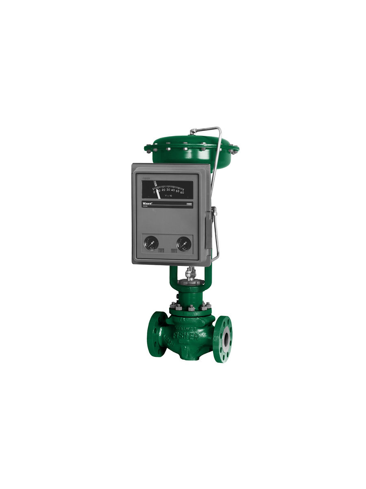
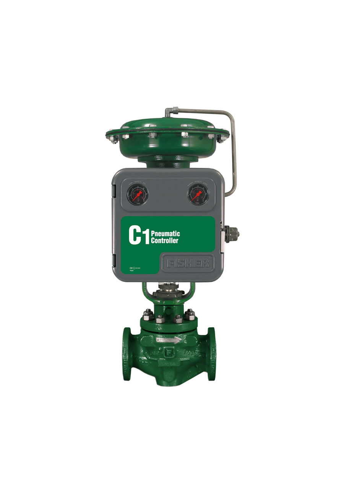
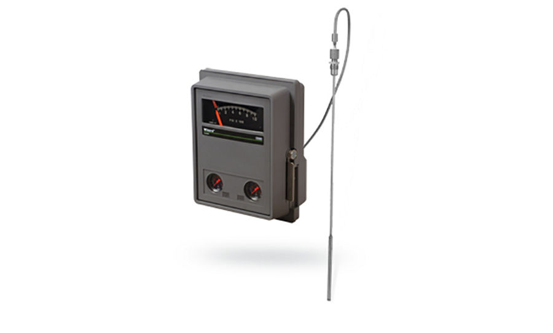
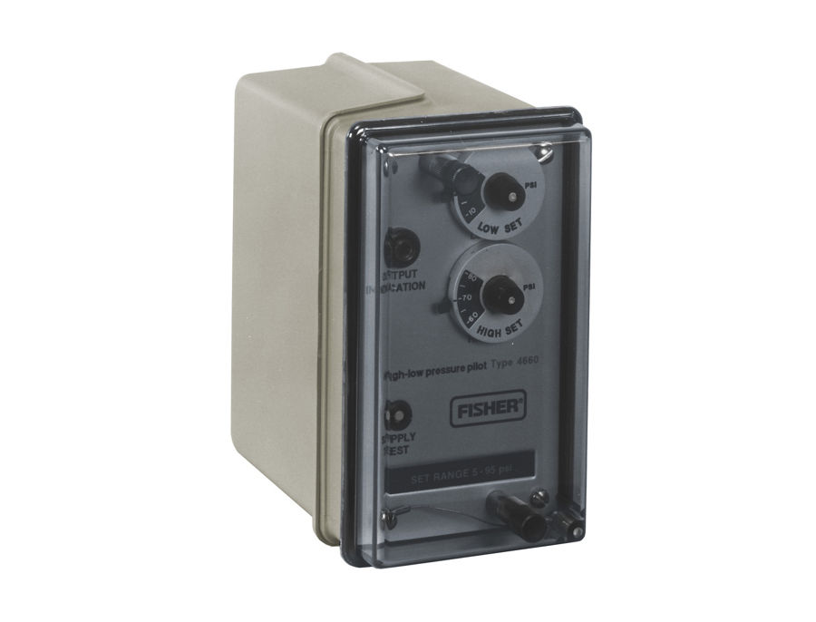
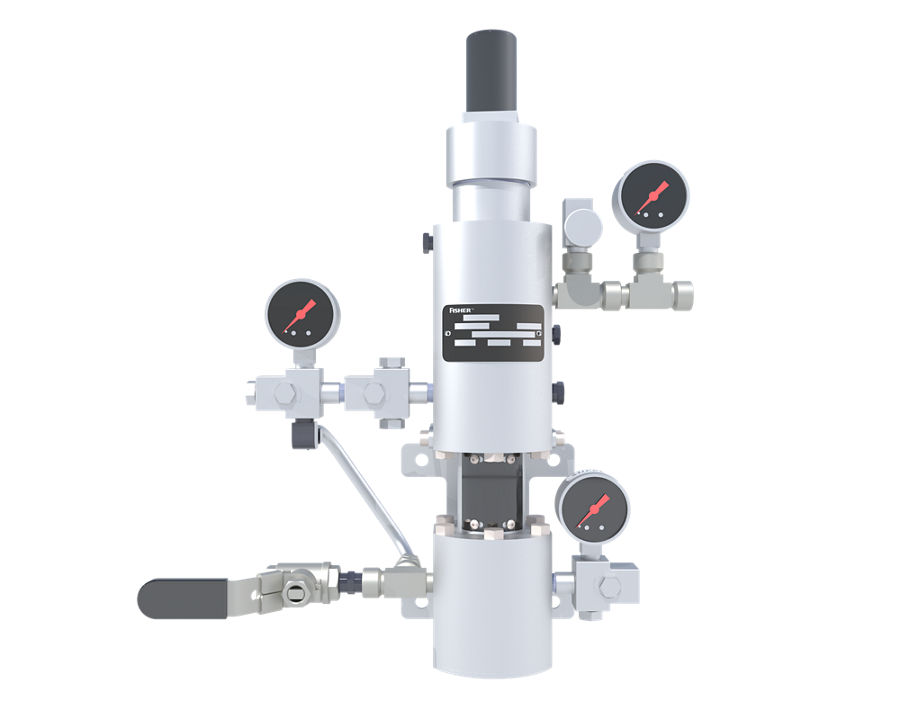
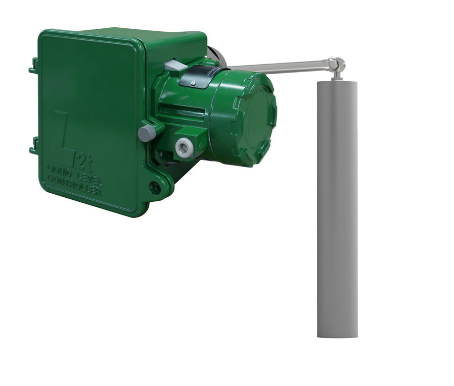

Fisher 4194 Differential Pressure Controller
Bộ điều khiển chỉ thị chênh áp khí nén; P, PI, differential gap; tiêu thụ khí thấp; hơn 100 mã.
Bộ điều khiển – chỉ thị áp suất khí nén 4195K, 4194 và C1 cho vòng điều khiển áp suất, chênh áp tại hiện trường không cần nguồn điện.
Fast Group cung cấp bộ điều khiển quá trình khí nén Fisher chính hãng, đủ CO/CQ. Mỗi model có trang riêng với mô tả, biến thể, tài liệu kỹ thuật và hướng dẫn gửi RFQ.

Bộ điều khiển chỉ thị chênh áp khí nén; P, PI, differential gap; tiêu thụ khí thấp; hơn 100 mã.

Bộ điều khiển chỉ thị áp suất khí nén; P, PI, PID, on/off; lắp trên actuator, ống, tường, tủ.

Bộ điều khiển/bộ truyền áp suất khí nén; Bourdon hoặc bellows; tiêu thụ khí < 6 scfh; bản NACE.

Bộ điều khiển khí nén Fisher 4196. Fisher 4196 temperature indicating controllers show process temperature and set point on an easy-to-read…

Bộ điều khiển khí nén Fisher 4660. The Fisher 4660 pneumatic high-low pressure pilot activates safety shutdown systems for flowlines,…

Bộ điều khiển khí nén Fisher 4680. Fisher 4680 zero-bleed pilot controller provides pneumatic pressure control on natural gas transmission…

Bộ điều khiển khí nén Fisher L2T. The Fisher™ FIELDVUE™ L2t level controller is part of the rugged L2 series of liquid level controllers. It…
Trụ sở TP. Hồ Chí Minh và văn phòng Vũng Tàu đều tiếp nhận RFQ, tư vấn cấu hình và bàn giao bộ chứng từ CO/CQ; bảo hành chính hãng 12 tháng kể từ ngày giao hàng. Yêu cầu gửi trong giờ làm việc được phản hồi trong cùng ngày; giao hàng toàn quốc.
150/41 Nguyễn Cư Trinh, P. Cầu Ông Lãnh
51 Lê Văn Lộc, P. Vũng Tàu